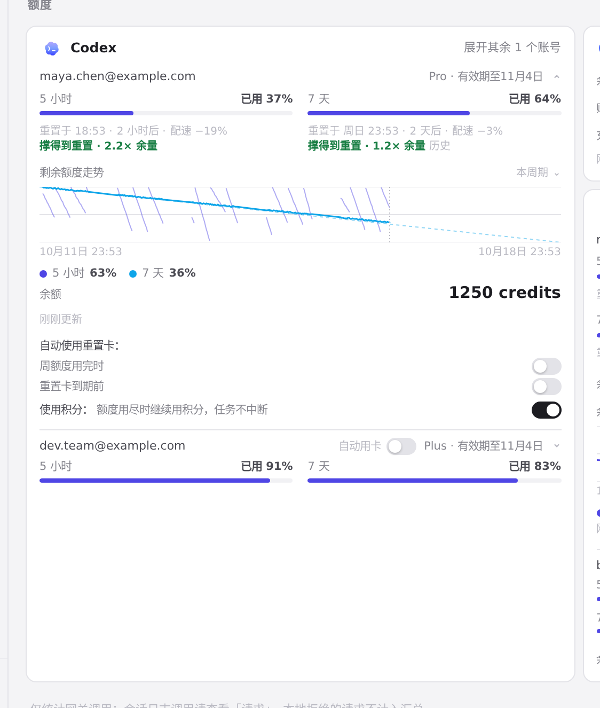
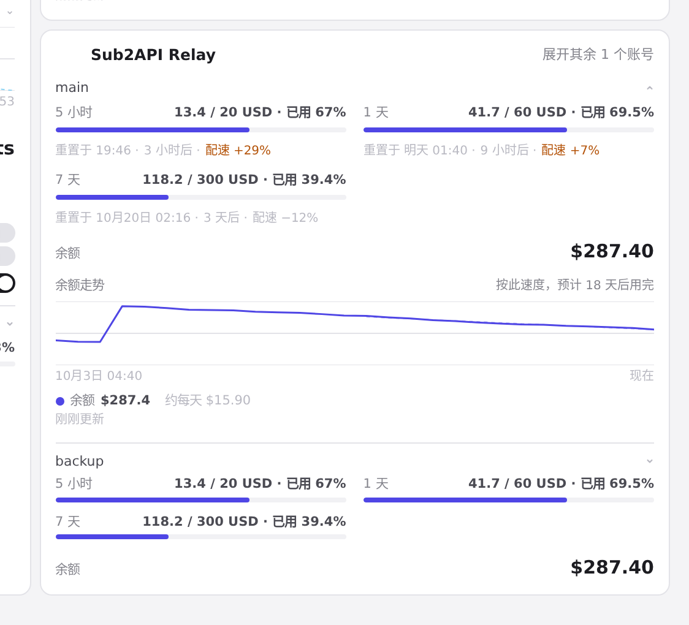
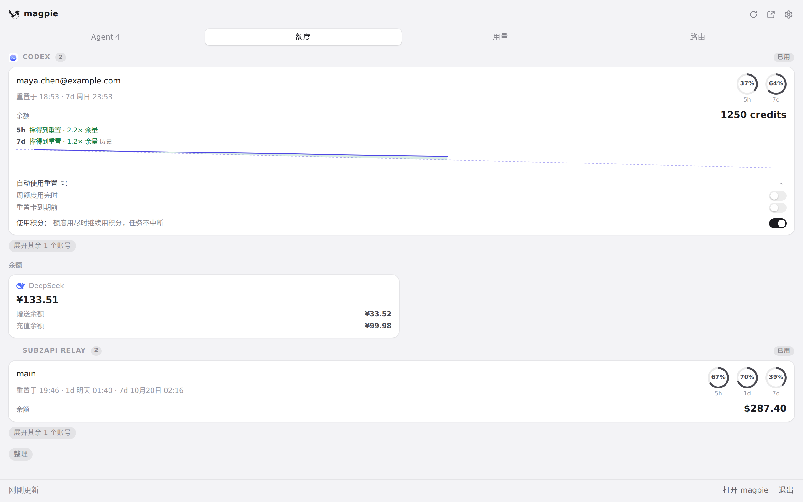

#977 界面预览
commit ac45532 · 回到 PR · 用量页的每个额度窗口和托盘面板的「额度」标签上，各加了一行「额度结语」：撑得到重置（带余量倍数，带「历史」标记时表示按该窗口的历史趋势而非匀速推算）、「…后用完」或「已用完」，数字由后端按窗口自身的读数算出，前端只负责翻译与排布。
红线是鼠标走过的轨迹，红色圆环是一次点击；底部文字是这一步在做什么。空格暂停，← → 逐段查看。

用量页的额度结语 · 用量页 Codex 卡片：每个额度窗口重置行下方的结语行

用量页的额度结语 · 同一页的 Sub2API Relay 卡片

托盘面板上的额度结语 · 托盘「额度」标签：卡片上每个窗口一行的结语